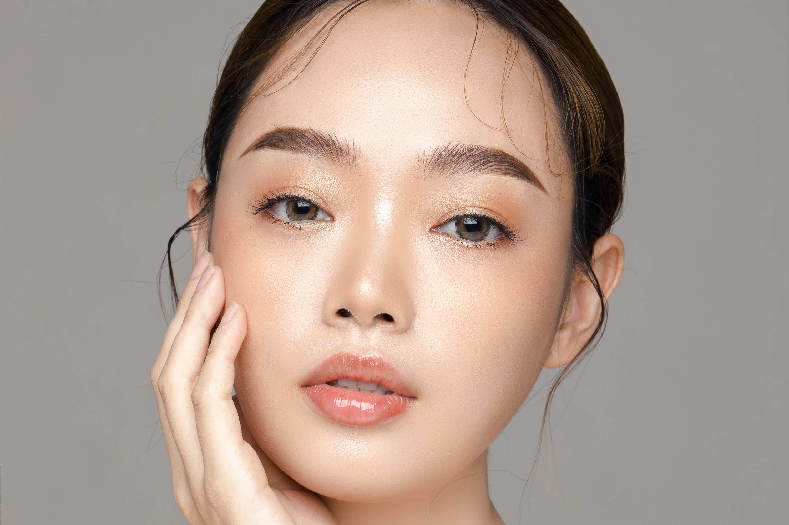
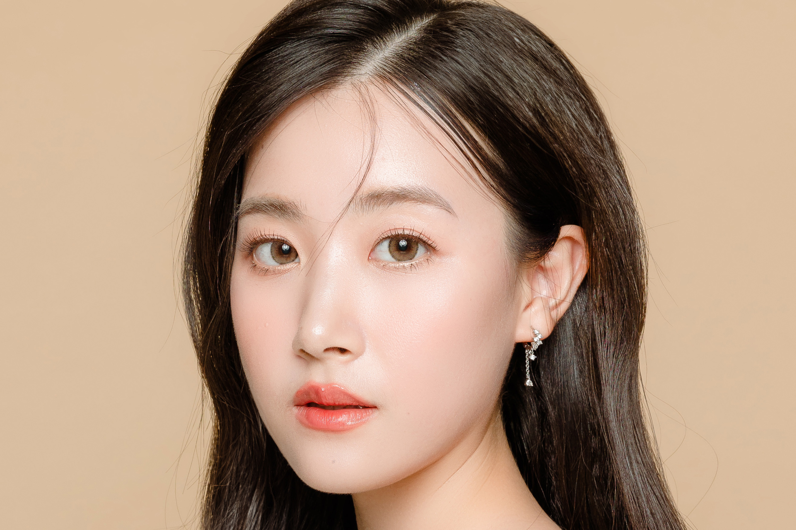
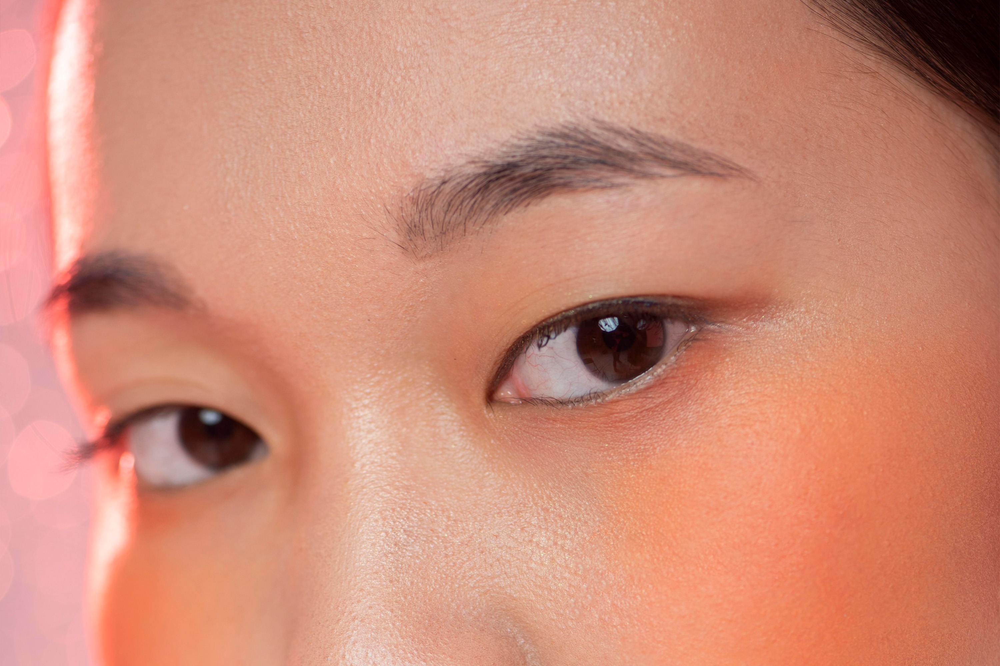

ใบหน้าของคนเราประกอบไปด้วยองค์ประกอบต่างๆ ไม่ว่าจะเป็น ตา ปาก จมูก คิ้ว ซึ่งทั้งหมดนี้ล้วนสำคัญต่อการแสดงออกเชิงภาพลักษณ์ และยิ่งทุกองค์ประกอบบนใบหน้ามีความสมดุลและเหมาะสมกับใบหน้ามากแค่ไหนภาพรวมของใบหน้าจะยิ่งดูดี ละมุนและลงตัวมากเท่านั้น แต่หนึ่งองค์ประกอบหลักบนใบหน้าที่สามารถสร้างความแตกต่างและเสริมสร้างเสน่ห์ได้เป็นอย่างดีคือ ดวงตา เพราะมันเป็นสิ่งที่สามารถใช้เพื่อแสดงออกทางใบหน้าได้ดีที่สุด และเป็นจุดสร้างเสน่ห์ที่สำคัญของใบหน้าได้เป็นอย่างดี
สิ่งหนึ่งที่มีเสน่ห์และน่าหลงใหลคือสายตา และนัยยะการมองจะเปลี่ยนไปขึ้นอยู่กับสายตา อย่างไรก็ตามไม่ใช่ทุกคนที่สามารถสร้างเสน่ห์ด้วยสายตาได้ อีกทั้งในบางกรณีผู้ที่มีตาชั้นเดียวมักถูกมองว่าไม่ค่อยแสดงออกเพราะตาชั้นเดียวจะมีความเล็กและสังเกตเห็นได้ยาก ทั้งนี้ด้วยดวงตาเป็นจุดเด่นที่ใช้สื่อสารและแสดงออกทางสีหน้าทั้งยังเป็นเสน่ห์ที่สำคัญของใบหน้า การทำตาสองชั้นจึงแพร่หลายมากขึ้น โดยทั่วไปผู้ที่ต้องการทำตาสองชั้นมักเป็นผู้ที่มีตาชั้นเดียว หรือผู้ที่มีหนังตาเยอะทำให้ดูเหมือนมีตาบวม หรือหนังตาหลบใน ซึ่งตาประเภทดังที่กล่าวมาทำให้ใบหน้าดูไม่เด่น เพราะแสดงออกทางสายตาได้น้อยและไม่ค่อยมีเสน่ห์หรือไม่ตรงตามค่านิยมความงามในบางวัฒนธรรม จึงเรียกได้ว่าการทำตาสองชั้นเป็นประเภทการศัลยกรรมที่สามารถสร้างความแตกต่าง และเสริมเสน่ห์ให้กับใบหน้าของคุณได้เป็นอย่างดี
การทำตาสองชั้นที่เกาหลีคือตัวเลือกที่ไม่ควรมองข้ามถ้าคุณอยากทำตาสองชั้นที่สวยแต่ยังคงความเป็นธรรมชาติ และมีเสน่ห์จนหยุดมองไม่ได้ แน่นอนว่าส่วนหนึ่งเป็นเพราะความเชี่ยวชาญด้วยประสบการณ์มากมายจากประเทศเกาหลีใต้ที่ขึ้นชื่อว่ายืนหนึ่งในเรื่องการทำศัลยกรรมแต่ยังสามารถมอบความเป็นธรรมชาติและความละมุนในแบบที่หาที่ไหนไม่ได้ แต่นอกเหนือจากนี้ยังมีหลายปัจจัยที่ถ้าพูดถึงเรื่องทำตาสองชั้นที่เกาหลียังไงก็น่าสนใจมากกว่า
ปัจจุบันการทำตาสองชั้นที่มีความนิยมสูงในไทยจะมีด้วยกันสองสไตล์หลักๆ คือทำตาสองชั้นแบบสายฝอ (คม เชี่ยว แบบฝั่งตะวันตก) และการทำตาสองชั้นแบบสไตล์เกาหลีที่จะคงความเป็นธรรมชาติและความละมุนอย่างที่เราได้กล่าวถึงในบทความนี้ การทำตาทั้งสองแบบสามารถสร้างความแตกต่างที่ชัดเจนบนใบหน้าได้เป็นอย่างดี เพราะมันจะส่งผลต่อภาพลักษณ์ และการแสดงออกที่แตกต่างกันออกไป แต่สำหรับใครที่สนใจการทำตาสองชั้นที่เกาหลีแบบที่สวยละมุน ธรรมชาติ ต่อไปนี้คือลักษณะทั่วไปที่เหมาะทำตาแบบนี้มากที่สุด
ตาสวยหวาน ละมุน มีเอกลักษณ์ แต่ยังคงความเป็นธรรมชาตินี้คือตาดวงใหม่ที่คุณจะได้รับจากการทำตาสองชั้นที่เกาหลี ซึ่งจะช่วยสร้างความมั่นใจให้กับใบหน้าของคุณ ทั้งยังเพิ่มความสมดุลให้กับใบหน้าได้อย่างลงตัว
คนที่ต้องการให้แต่งตาง่ายขึ้น
คนที่ต้องการองค์ประกอบของหน้าให้ดูหวานละมุน
คนที่มีโครงหน้าไม่ใหญ่มากนัก
คนที่มีตาชั้นเดียว
